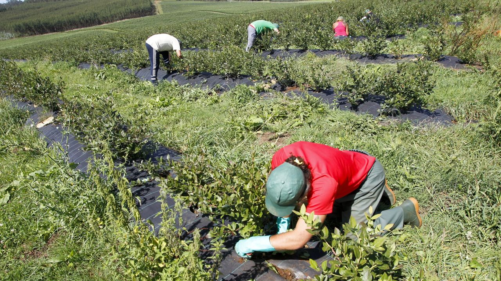

Temporada de Higo fresco

Agosto/Octubre
Aunque las brevas (la primera cosecha de la higuera) se
recogen entre junio y julio, los higos más dulces y verdaderos
son los que maduran durante el calor del final del verano.
Temporada de cerezas

Mayo / Julio
La temporada principal de cerezas en España y el hemisferio
norte se concentra en los meses de mayo, junio y julio, siendo
la primavera y el inicio del verano el periodo óptimo de
recolección. Aunque la cosecha fuerte es en mayo y junio,
algunas variedades tardías pueden encontrarse hasta principios
de agosto.
Temporada de arandanos

Marzo / Agosto
La temporada principal de arándanos en España se extiende de
marzo a agosto, con especial calidad en los meses de verano.
Aunque los primeros llegan de Huelva a principios de
primavera, la producción nacional de mayor jugosidad se
concentra a partir de junio, extendiéndose la recolección en
zonas del norte como Asturias hasta octubre.